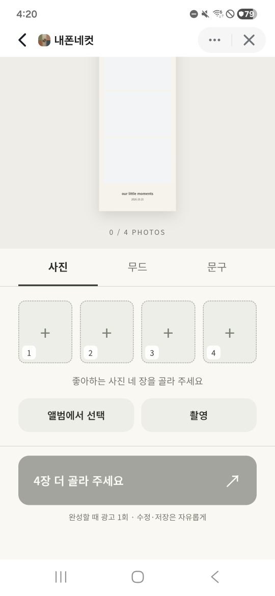

<!doctype html><meta charset="utf-8"><style>*{box-sizing:border-box}body{margin:0;background:#f5f2e9;font-family:"Malgun Gothic",sans-serif;color:#293b2e}main{width:1504px;height:741px;padding:58px 90px;position:relative;overflow:hidden}.label{font-size:26px;letter-spacing:3px;color:#9d4a37}h1{font-size:64px;line-height:1.3;letter-spacing:-3px;margin:55px 0 30px}p{font-size:29px;line-height:1.7;color:#65705d}.note{position:absolute;bottom:48px;font-size:22px}.phone{position:absolute;right:100px;top:25px;height:810px;border-radius:24px;box-shadow:0 15px 45px #0002}</style><main><div class="label">내폰네컷</div><h1>사진 네 장,<br>오늘을 한 장으로.</h1><p>사진 고르기 → 무드 고르기 → 문구 쓰기<br>갤러리 속 순간을 네컷으로 모아보세요.</p><div class="note">앱 편집 화면 · 완성 단계에 광고 1회</div></main>